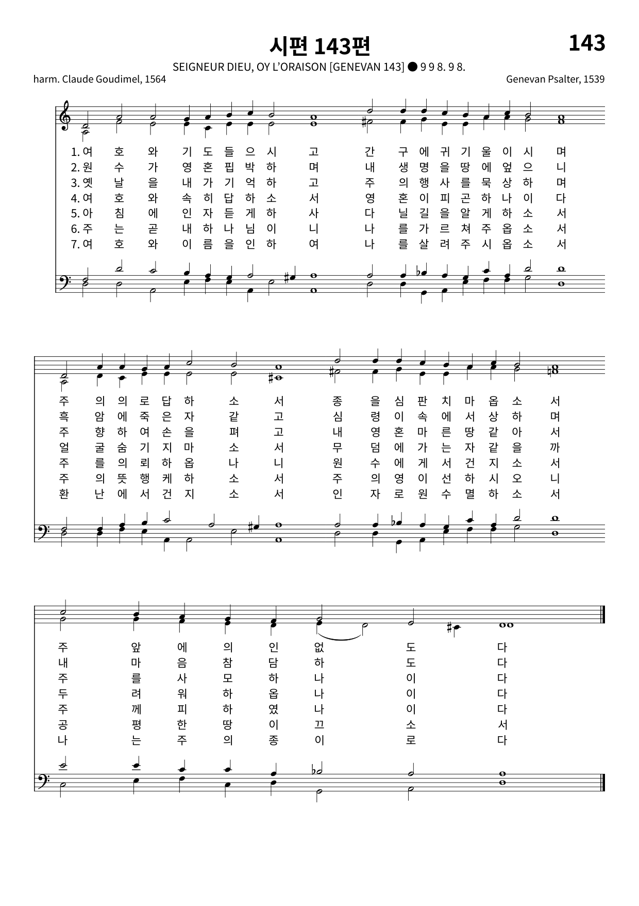

Psalm 143
SEIGNEUR DIEU, OY L’ORAISON [GENEVAN 143] · 9 9 8. 9 8.
English title: Hear Thou, O LORD, My Supplication
Tune: Genevan Psalter, 1539 · Harmony: Claude Goudimel, 1564 · Lyrics: Korean adaptation of Psalm 143 from the Korean Revised Version (AI draft adaptation · not yet theologically reviewed) · 7 stanzas
Score PDF MusicXML (for printing) MusicXML (for accompaniment, with prelude and repeats) Read Psalm 143 (Korean Revised Version)
Score
← Psalm 142 ListAccompaniment (in preparation)Psalm 144 →
Lyrics (Korean)
Stanza 1
여호와 기도 들으시고
간구에 귀 기울이시며
주의 의로 답하소서
종을 심판치 마옵소서
주 앞에 의인 없도다
여호와 기도 들으시고
간구에 귀 기울이시며
주의 의로 답하소서
종을 심판치 마옵소서
주 앞에 의인 없도다
Stanza 2
원수가 영혼 핍박하며
내 생명을 땅에 엎으니
흑암에 죽은 자 같고
심령이 속에서 상하며
내 마음 참담하도다
원수가 영혼 핍박하며
내 생명을 땅에 엎으니
흑암에 죽은 자 같고
심령이 속에서 상하며
내 마음 참담하도다
Stanza 3
옛날을 내가 기억하고
주의 행사를 묵상하며
주 향하여 손을 펴고
내 영혼 마른 땅 같아서
주를 사모하나이다
옛날을 내가 기억하고
주의 행사를 묵상하며
주 향하여 손을 펴고
내 영혼 마른 땅 같아서
주를 사모하나이다
Stanza 4
여호와 속히 답하소서
영혼이 피곤하나이다
얼굴 숨기지 마소서
무덤에 가는 자 같을까
두려워하옵나이다
여호와 속히 답하소서
영혼이 피곤하나이다
얼굴 숨기지 마소서
무덤에 가는 자 같을까
두려워하옵나이다
Stanza 5
아침에 인자 듣게 하사
다닐 길을 알게 하소서
주를 의뢰하옵나니
원수에게서 건지소서
주께 피하였나이다
아침에 인자 듣게 하사
다닐 길을 알게 하소서
주를 의뢰하옵나니
원수에게서 건지소서
주께 피하였나이다
Stanza 6
주는 곧 내 하나님이니
나를 가르쳐 주옵소서
주의 뜻 행케 하소서
주의 영이 선하시오니
공평한 땅 이끄소서
주는 곧 내 하나님이니
나를 가르쳐 주옵소서
주의 뜻 행케 하소서
주의 영이 선하시오니
공평한 땅 이끄소서
Stanza 7
여호와 이름을 인하여
나를 살려 주시옵소서
환난에서 건지소서
인자로 원수 멸하소서
나는 주의 종이로다
여호와 이름을 인하여
나를 살려 주시옵소서
환난에서 건지소서
인자로 원수 멸하소서
나는 주의 종이로다